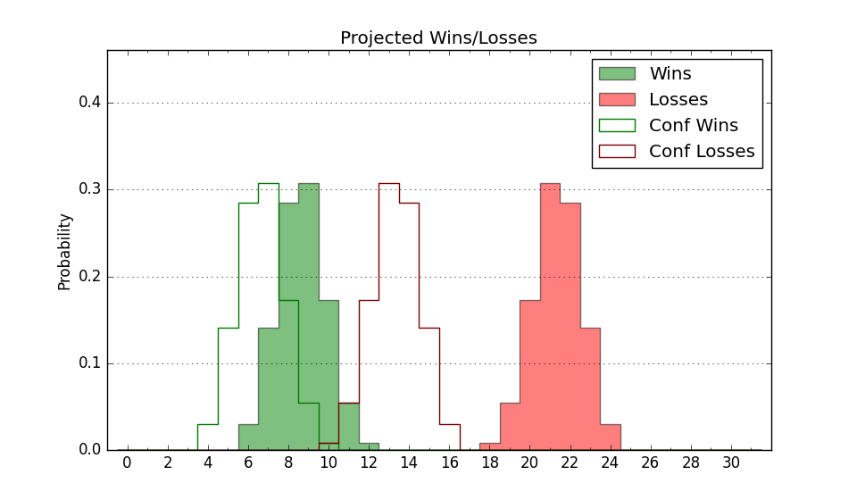

| Home | Game Probabilities | Conferences | Preseason Predictions | Odds Charts | NCAA Tournament |
| City: | Long Beach, California | |
| Conference: | Big West (9th)
| |
| Record: | 4-9 (Conf) 6-17 (Overall) | |
| Ratings: | Comp.: -7.1 (237th) Net: -7.0 (237th) Off: 105.5 (227th) Def: 112.5 (240th) SoR: 0.0 (105th) |
| Remaining | ||||||
|---|---|---|---|---|---|---|
| Date | Opponent | Win Prob | Pred. | |||
| 2/14 | @ UC Davis (180) | 23.4% | L 71-80 | |||
| 2/19 | UC Irvine (121) | 35.1% | L 68-73 | |||
| 2/21 | Cal St. Northridge (193) | 53.6% | W 82-81 | |||
| 2/26 | @ Cal Poly (234) | 34.4% | L 80-85 | |||
| 2/28 | @ Cal St. Bakersfield (317) | 57.8% | W 78-76 | |||
| 3/5 | UC Davis (180) | 51.0% | W 76-75 | |||
| 3/8 | @ Hawaii (89) | 9.2% | L 65-81 | |||
| Previous | Game Score | |||||
| Date | Opponent | Win Prob | Result | Off | Def | Net |
| 11/4 | @San Diego St. (42) | 3.7% | L 45-77 | -27.1 | 9.9 | -17.3 |
| 11/8 | @Fresno St. (136) | 16.1% | L 62-82 | -11.2 | -3.9 | -15.1 |
| 11/12 | @Pacific (94) | 10.3% | L 66-69 | -3.1 | 22.1 | 19.0 |
| 11/16 | Illinois St. (78) | 22.0% | L 80-82 | 19.3 | -9.1 | 10.2 |
| 11/21 | Montana St. (126) | 36.8% | L 72-78 | -4.4 | -0.3 | -4.7 |
| 11/26 | @Portland (205) | 27.2% | L 73-93 | -1.5 | -18.6 | -20.1 |
| 11/30 | San Diego (216) | 58.1% | W 76-72 | 10.6 | -6.3 | 4.3 |
| 12/4 | @UC Santa Barbara (133) | 15.6% | L 77-84 | 0.4 | 7.3 | 7.7 |
| 12/6 | UC San Diego (127) | 36.8% | L 74-80 | 6.8 | -11.0 | -4.1 |
| 12/9 | @San Jose St. (248) | 36.7% | L 83-89 | 10.3 | -12.0 | -1.7 |
| 12/18 | Pepperdine (268) | 71.5% | W 81-78 | 8.4 | -10.0 | -1.6 |
| 12/21 | @Iowa St. (5) | 0.8% | L 60-91 | -4.4 | 7.0 | 2.6 |
| 1/3 | Cal Poly (234) | 64.1% | W 74-66 | -7.9 | 12.8 | 4.8 |
| 1/8 | @UC Irvine (121) | 13.7% | L 64-74 | -2.2 | 3.3 | 1.1 |
| 1/10 | Cal St. Bakersfield (317) | 82.3% | W 81-75 | -8.0 | 0.5 | -7.5 |
| 1/15 | UC Riverside (284) | 74.0% | W 88-73 | 16.5 | -2.3 | 14.2 |
| 1/17 | @Cal St. Northridge (193) | 25.3% | W 87-80 | 8.6 | 13.3 | 21.9 |
| 1/22 | @Cal St. Fullerton (178) | 22.8% | L 61-71 | -11.5 | 7.2 | -4.3 |
| 1/24 | UC Santa Barbara (133) | 38.6% | L 71-74 | 2.5 | -2.7 | -0.2 |
| 1/29 | @UC Riverside (284) | 45.6% | L 61-71 | -15.7 | 7.3 | -8.5 |
| 1/31 | Hawaii (89) | 25.7% | L 82-89 | 16.3 | -17.2 | -0.8 |
| 2/5 | @UC San Diego (127) | 14.6% | L 74-77 | 3.5 | 10.2 | 13.7 |
| 2/12 | Cal St. Fullerton (178) | 50.2% | L 82-86 | 2.5 | -10.3 | -7.8 |
| Stats & Trends | |||||
|---|---|---|---|---|---|
| Current | Day | Week | Month | Season | |
| Composite | -7.1 | -0.3 | -0.4 | +2.6 | +4.1 |
| Comp Rank | 237 | -2 | -7 | +21 | +44 |
| Net Efficiency | -7.0 | -0.3 | -0.4 | +2.5 | -- |
| Net Rank | 237 | -3 | -7 | +15 | -- |
| Off Efficiency | 105.5 | +0.2 | +0.3 | +2.1 | -- |
| Off Rank | 227 | +7 | +6 | +27 | -- |
| Def Efficiency | 112.5 | -0.5 | -0.7 | +0.4 | -- |
| Def Rank | 240 | -4 | -7 | +21 | -- |
| SoS Rank | 127 | -10 | -11 | -19 | -- |
| Exp. Wins | 8.6 | -0.5 | -0.6 | -0.4 | -1.9 |
| Exp. Conf Wins | 6.6 | -0.5 | -0.6 | -0.4 | -0.8 |
| Conf Champ Prob | 0.0 | -- | -- | -- | -1.2 |

| Advanced Stats | ||
|---|---|---|
| Stat | Value | Rank |
| Off Eff FG % | 0.513 | 173 |
| Off Ast Ratio | 0.143 | 205 |
| Off ORB% | 0.260 | 303 |
| Off TO Rate | 0.149 | 197 |
| Off FT Ratio | 0.315 | 274 |
| Def Eff FG % | 0.536 | 255 |
| Def Ast Ratio | 0.155 | 239 |
| Def ORB% | 0.281 | 91 |
| Def TO Rate | 0.151 | 157 |
| Def FT Ratio | 0.436 | 327 |